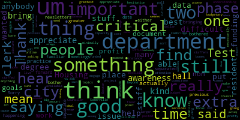
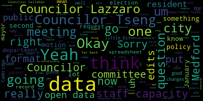
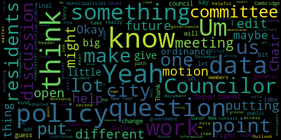
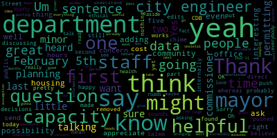

[Lazzaro]: Test one, two, test one, two.
[Leming]: Ready? We'll now have a meeting of the Medford City Council Resident Services and Public Engagement Committee. Mr. Clerk, when you're ready, please call the roll.
[Hurtubise]: Councilor Callahan? Present. Councilor Lazzaro? Present. Councilor Scarpelli? Councilor Scarpelli is absent. Councilor Tseng?
[Leming]: Present.
[Hurtubise]: Chair Leming?
[Leming]: Present.
[Hurtubise]: Board present.
[Leming]: One absent. Meeting is in order. First thing we're going to do is work on and approve, potentially approve the monthly, the, sorry, monthly newsletter. Just gonna really quickly share my screen. So I'd like to thank Councilor Lazzaro for drafting this month's newsletter and sending it out to folks. drafted a couple of changes to this, just a few minor changes to the, excuse me, just a few minor changes to the blurb, as well as some minor grammatical changes. Do y'all have access to?
[Tseng]: Yeah, my Outlook is just freezing up right now. Outlook doesn't work.
[Leming]: Oh, okay. I can put, Well, I'm just going to make sure that in terms of one moment, I can put the link to this one in the zoom chat if you're on zoom.
[Tseng]: Okay.
[Leming]: I'm just going to share this. Zoom again. All right. Share. All right, now I'm just gonna paste the sharing link into the chat for this one. I just wanna look over the edits. And yeah, so basically it's just a, I think this is getting pretty routine right now, by now, which is great. I basically just clarified the only edits I made to Councilor Lazzaro's text, which she sent out to the committee yesterday was to, have the was to clarify the status of the Salem Street Corridor rezoning, um, its status and the Community Development Board, um, as well as on the Governance Committee. I just want to clarify that mainly what we talked about were changes, um, to City Council composition, since that was probably the most, uh, that we probably spent the most time discussing that particular topic. So I just figured for clarification purposes, I wanted to add that in there. Then that is, that's about it. I added a the in there, the calendar year 2025. Councilor, oh, I see Councilor Tseng put his, put his up first, I'm just going to turn his mic on. Councilor Tseng.
[Tseng]: Thank you. A few notes. The first one about the governance committee item, I like the edit that you suggested about putting in the, including discussions regarding the change of city council composition. If we could put in something about how we will make, we're keeping discussions open. and taking a final vote in a future committee, that would be, I think, helpful for residents to know that we haven't made any final changes to this document.
[Leming]: Do you think we should also clarify exactly what was referred out of governance in that case? I mean, it's not for sure. Yeah.
[Tseng]: We haven't heard anything out of governance, but maybe we could say something like the committee adopted a number of edits which continue to be up for discussion and can continue to be on the table pending a final vote in a future committee of the whole meeting.
[Leming]: I'm just going to say the committee referred
[Tseng]: Yeah, the only thing I would say is we didn't just refer discussion of this matter or any edit. So of any potential or any edits, I guess, instead of this matter.
[Leming]: Refer discussion of any potential edits. Yeah, something along those lines.
[Tseng]: If we could capitalize committee since proper now or proper now.
[Callahan]: Sorry, but to me, that is a little, like, I would not get from that what I think you mean. Oh, OK. Yeah, yeah, yeah. I'm happy to, yeah. So to me, that sounds like when you push this off to the other, whereas we're still discussing it internally. I would just be, if you want to probably say no decisions have been made yet, I would say that.
[Tseng]: OK. Yeah, yeah, yeah. I think that makes sense. It's a little more direct, yeah.
[Callahan]: Yeah, a little more direct.
[Tseng]: Yeah. OK. Yeah, we can also move on from this and I can suggest some language in the meantime. And then the other main question or point I had was, I'm noticing in this version of the newsletter in particular, there's a lot of like, in the general business, there's a lot of points that start out with the same like, at the December 17 meeting, at this meeting, at this meeting, I wonder if we could do one big bullet point, or one big header that's just, not header, but like, one big point that's just like, at the December 17th meeting, cold, and sub-bullet points for the rest, just to like, make it a little bit more readable, and to make the context stand out a little bit more. But Councilor O'Trella, I mean, you know more about how this is gonna be formatted than I do.
[Leming]: Yeah, I would, I would say, um, combined, it would probably make it a little bit cleaner to combine the points about CCOPS and the welcoming city ordinance from the January 14th meeting. So that's one way to sort of shorten it a little bit. We also so that that's yeah and then January passed a resolution for more activities. We approved. I don't know if that's a good way to describe it.
[Tseng]: One second. Chair Lemon, do you think you could share edit access to me?
[Leming]: Right. Hold on. I'm going to unshare the screen to keep some emails private, but I'm not gonna I just added your emails to this.
[Tseng]: Thank you.
[Leming]: I mean we really did just do a lot of January 14 meeting. And i'm also just going to go and combine the two liquor licenses.
[Lazzaro]: So. Those are two separate meetings if we don't if we're not bothered by when the things are happening. It doesn't bother me either, but I mean. I don't know. The previous newsletters had them separated by date.
[Leming]: OK. I mean, I think this is overall pretty good. I'm just going to wait on Councilor Tseng to finish his thoughts on the City Council composition. Yeah, I think what you have right there is fine, Councilor Tseng. Yep. Councilor Callahan.
[Callahan]: Thanks. Just two minor edits. The first is under planning and permitting. I believe that we just found out today at planning and permitting that they're not going to be, the CDB is not going to be talking about Salem Street on February 5th.
[Leming]: Okay. Did they, do you know if they pushed it off?
[Callahan]: They pushed it. Yeah. So I just don't want to put February 5th because I'm pretty sure that they are not talking about it on February 5th, so.
[Leming]: Okay, I'll just put it a later date.
[Callahan]: Yes, that would be great. And then the second one, and this is very minor, but under public works, the last sentence, we also heard from the commissioner and city engineer on the possibility of, the city engineer did not chime in and had nothing to say, so we just removed the city engineer part of that sentence. The city engineer was really there to talk about the roads.
[Leming]: We also, wait, so just from the commissioner,
[Callahan]: So the last sentence should read, we also heard from the commissioner on the possibility of, yeah.
[Tseng]: Chair, let me, just one more thing. I think we could just note that we are beginning work on developing an open data policy at today's meeting, just for the last point.
[Leming]: Okay. January 29th meeting. Yeah. All right. And we're developing an open data policy. I guess we don't need to get that specific. Yeah, I think just just saying we began our work developing an open data policy or January 29 the meeting is sufficient. I mean, you should be really quick. bullet points. We also haven't actually had that discussion yet. So we have yet to, um, but no, I think that what we have now is we have now is fine.
[Tseng]: Yeah. Just like something like this. Yeah. That's good. Okay. That's all I have. Um, okay.
[Leming]: Any other comments from Councilors?
[Tseng]: I guess we could, we could put in camera commemorations. Um, uh, the lunar new year.
[Leming]: January 28, we passed the resolution. Is it Lunar New Year or the Lunar New Year? Is it Lunar New Year or the third? Never mind.
[Tseng]: Oh, yeah, it's just Lunar New Year. I think other cultures also have Lunar New Years, but on different days. Gotcha.
[Leming]: Okay. Any other comments from councilors? Do we have a motion on the floor? Do we have a second? Second. Okay. On the motion to approve the current draft of the newsletter. Including edits, right? Including edits by Councilor Callahan, seconded by Councilor Tseng. Mr. Clerk, when you're ready, will you please call the roll?
[Tseng]: And this is also a motion to distribute the newsletter?
[Leming]: Yeah.
[Lazzaro]: Sorry, I can't hear the clerk.
[Lazzaro]: The clerk said something I can't hear.
[Leming]: Yeah. Yeah. The clerk is he's still he's still preparing the notes. Sorry about that. Your apology is accepted. Councilor Lazzaro. Sorry.
[Hurtubise]: Roll call vote. Councilor Callahan. Yes. Councilor Lazzaro. Yes. Councilor Scarpelli is absent. Councilor Tseng? Yes. Chair Leming?
[Leming]: Yes. Affirmative. Negative. The motion passes. Next thing we're going to discuss is the development of the open data policy. So we introduce this as something to refer to committee. Initially, Councilor Tseng and myself, and prior to the meeting, after Councilor Tseng and I did a bit of research on this, we distributed a sample ordinance from the city of Cambridge, as well as an executive order from the city of Boston, which gives sample language of other open data policies. Um, we also drafted a couple of questions to, uh, give out to, uh, department heads to just basically get some more information about what kind of data they're sitting on. As we, uh, uh, develop some of the parameters of this policy, uh, Councilor Tseng, is there anything you'd like to say?
[Tseng]: Yeah, I mean, just to give my fellow Councilors and anyone who might be watching at home, a general idea of what an open data policy is. It's a modernizing practice that a lot of municipalities have adopted to let residents access data and information from the city quicker. and to let them help us with policy development. I know all of us know of residents who are really eager to help out and really excited that a lot of residents are so eager to help out with policy development here. I know Councilor Callahan does a lot of work with residents on this as well. I think this very much falls in line with the City Council's goals of greater transparency, greater modernization, being more proactive and inclusive when it comes to developing policy too. And I know, you know, members of the public have brought up that with the policy changes in the city, there are, you know, XYZ questions that they wish they could have asked or XYZ pieces of data they could have had before making decisions on those or before giving public feedback about different items, or even after with, helping us generate, you know, how to make our processes better in the future. This is something that Cambridge, Boston, I believe some other municipalities too, have taken on themselves, onto themselves, of passing a policy or via ordinance or executive order to create some structure, some framework of doing that. And so the Cambridge sample ordinance that we have in front of us and in our inboxes is an example of of what this might look like in an ordinance form. Of course, there are very different structures of government between Cambridge and Medford, so that's something to keep in mind while we're reading the draft. But I thought it would be helpful to give Councilors some sample text to work off of to give us more concrete idea of what this policy might look like. The Boston executive order is also in the document. Obviously, executive order is very different from an ordinance, but it's still worth, you know, seeing what other municipalities are doing. you know, giving us inspiration as to maybe like what goals we should aspire to, what possible paths policy-wise can we take to get there. With the questions that, the bullet point questions that we have in front of us and in the inbox, and maybe I should read them real quick.
[Leming]: I can read them.
[Tseng]: Okay, the chair can read them. But to give context, Chair Lemme and I have been talking for a bit about what kind of information we might wanna gather and put publicly on our website. And these are the questions that we came up with. We're happy to add more questions from other Councilors to this list. And of course, as we develop this policy and as we work on this, we can keep asking more questions to the administration and to different city departments too. Something I did forget to mention is that oftentimes an open data policy is, is introduced alongside a committee to work through this data, to help clean up this data, to help think of more data in the future, to make sure that this is a recurring cycle, not just like we're doing this at once and then we have to revisit this as a city council every few years. But obviously, also with putting data online, we also have to be aware and cognizant of security concerns with that conversation as well.
[Leming]: So before I go to other Councilors, I'm not going to read through the entirety of the Cambridge and Boston sample ordinances. Given that Cambridge and Boston tend to be a lot more well-financed to support things like this, I developed a list of questions for some of the department heads that I think have relevant data sets, along with just inquiries about their staff capacity to implement these things. So the first question goes to the mayor, which is just what is the administration view as practical concerns to enacting an open data policy along the lines of Boston and Cambridge's policies? And this is because it is the mayor is the person in charge of department heads. So they will, they do have a lot of ability in overseeing this, even with the ordinance enacted. The general question for department heads, the general request for the mayor is to request that city departments report to the resident services and public engagement committee on what data or records are currently commonly requested them, what data or records they collect and what data or records they would feel open to sharing with the public and why or why not. I also thought of six or five other departments that I know I've specifically worked with or tried to work with their data in the past. So these are just kind of more targeted questions. First, the elections office. How far back does elections data historically go both in a digital format and paper archives? And do you have the staff capacity and resources to digitize Medford's election data from before 2005? So this one in particular is interesting because the elections website just kind of posts PDFs and sort of inconsistent formats. And the data only goes back to 2005. I do know that they have paper records in the basement that go back further, but I do need to respect the staff capacity of the elections office when it comes to their ability to go down there and write down all of those data points from previous generations. even though I personally would be interested in seeing it. From the Finance Office, how far back does Medford digitized budgetary data go? Are there legal or ethical concerns with publishing the bulk data in an analyzable format? Do you have the staff capacity and resources to publish bulk budgetary data consistently for public use? The idea behind this one is that usually budget data is published in either different meeting records or in a big PDF that's released every year, and that's excellent, but it would be useful to have data in a kind of more of a spreadsheet format so that could be analyzed with software so that residents can track if they wanted two different uses of the budget over time and how that's evolved over the years, which I think would help inform the public conversation around this. From the assessor's office, how far back does Medford's historic assessor's data go? Are there legal or ethical concerns to publishing bulk property value assessment data in an analyzable format? And do you have the staff capacity and resource to publish bulk assessor's data consistently for public use? So the assessor's data right now publishes everything via the Vision Government Solutions website, which is actually, so all assessment data is available online. But again, if you wanted to analyze like the average assessment value of all Medford property or the all Medford property in like West Medford or something like that, it would be very difficult to do that via what's currently available. I do know that the assessor's office has internal data. that they use that they could just put online in spreadsheet format, so I don't think this is big ask. From the DPW, does the DPW use spreadsheet data internally to keep track of road repair streets and so on? How far back does this data historically go? Are there any legal or ethical concerns with publishing this data openly? Again, just residents want to see how what roads are being repaired and just being able to analyze that historically, so that's more of an open-end one. And from the building department, the same question about inspections, permitting requests, and so on that would be publishable as a database for the properties around Medford, legal, procedural, ethical concerns with publishing the data, how far back they decided to go historically, and the staff capacity question. So the motion on the floor would be to send these questions out to the mayor and the relevant department heads, but I'm also interested in hearing if my colleagues have any thoughts or anything that they would like to add. Councilor Callahan and then Councilor Lazzaro.
[Callahan]: Yeah, these are great. I love the fact that you're for each one of these, you're asking, does staff have the capacity? Do you see any ethical concerns? You know, these are, these are great questions to ask to everybody. I would just ask the mayor's office as well, what other data aside from these she thinks would be interesting, or might be helpful to the to the community. Um, I don't know if the health department has data that would be interesting or helpful to the community to understand over time. Um, you know, there are maybe other departments. Um, you know, we have our housing department is incredibly small, not even a department, but you know, with housing data that we have over time, like there are other things that might be useful. And so just adding that one question to the mayor's office would be good. Thanks.
[Leming]: Um, would we be able to just, um, add that because in the second line, the general request, I think, um, covers a lot of what you mentioned. It's a request to the mayor and city departments to report to this committee anything that they think would be interesting. Essentially, Councilor Lazzaro.
[Lazzaro]: Thank you. I appreciate you bringing this forward. It's something that I'm not very familiar with, so I appreciate people with greater awareness and understanding of these topics to bring it to the floor and bring it to the departments in the city where it's appropriate. My hesitation comes from the awareness that our city hall is pretty minimally staffed kind of bare bones to some degrees and that if a project like this would be difficult to pull off or would ask city hall staffers to engage in something that's beyond their capacity or we would have to, or really is this like a, budgetary thing? Would we have to add this to the budget? Is there going to be a cost associated with it? I'm asking because I don't know.
[Leming]: I could take that, but I see that Councilor is saying also, did you want to address that or do you have your own? Yeah, so This does come with the caveat in a lot of these questions about staff capacity. So we are asking that, and that is a concern, especially if, I mean, we can't just copy the open data policies of cities that have a much larger budget than ours wholeheartedly. But there are, the point of these questions is to sort of figure out if there are, low-hanging fruit, I hate that term, but it is used to describe the situation, that they could just easily post to their website. So I know, for instance, that that's the case with the assessor's office. They already work with spreadsheet data internally, and it really wouldn't be any skin off their back to just put it onto the website instead of the typical databases. And with the elections office, it's really not that much data. It's really just typing out the spreadsheets that they normally publish in PDF formats into something that's a little bit cleaner. Councilor? But yeah, that is a concern. Councilor Tseng? Did you? Yeah.
[Tseng]: Thank you. Um, I think that more or less captures what I was thinking. Um, I think as we, as this becomes a bigger thing, as you know, once we've gotten past that step of low hanging fruit, I, I, I, this is something I haven't talked to councilor lending about, but I do envision in an ideal world, this becoming a bigger project after that step. Um, and I got, I alluded to this earlier. Um, a lot of, cities will do something called an open data review board. And that might be staff members who get a stipend. That might be community members who we appoint and who have some interest slash work experience dealing with this kind of stuff, organizing data and whatnot. Perhaps that is the path that we we reach, you know, that's the path that we take moving forward. But I also think that, you know, that question is the kind of farther future thing. And I think it'd be a little premature to take on that discussion right now.
[Leming]: Councilor Callahan and then Councilor Lazzaro.
[Callahan]: Thanks. Councilor Lazzaro, I so appreciate you bringing that up. I do think that that's a real concern given the skeletal nature of many of our departments. And I guess what I would say is staff capacity is a question people can answer many ways. People could say, well, if you pass it, we have to do it. So yes, you have the staff capacity. They could say, no, we don't have the staff capacity because we're already at our max. even if it's five minutes, right? So I think adding a question of a rough cost estimate would be more helpful because that would, some people might say, yeah, that'll, you know, it would take me two hours to do everything. And that's one thing. And another person might be like, yeah, that's gonna be like five hours a week for the next six months, right? So I think having an idea of what each department thinks might be the cost to putting it up for the first time and or keeping it maintained. I think that would be helpful information.
[Tseng]: I guess something we could add to that question. Councilor Lazzaro was... Oh, sorry, that was just writing. Could I?
[Leming]: Okay.
[Tseng]: Sorry, Councilor Lazzaro, something we could add to that point is just in addition to the staff capacity and resources, question. Um, just like what?
[Leming]: Okay, we could add that as an additional boil point under General Councilor was our.
[Lazzaro]: Thank you. I think my point I think it's important that we, this is sort of a big picture issue, but I think it's important that we as a council, and I'm not saying that this is not an important issue, but I think it's critical that we focus our attention to the greatest degree possible on the things that are most critical for our residents. This is the resident services committee. I know that this is important, but also if we have an extra, extra time available in any department. I can't imagine that anybody has extra time because Boston and Somerville and Cambridge all have staff in all of their departments that are like many times larger than the staff in our departments. And they also have many more departments than we have. They have an Office of Housing Stability, for instance, which we do not possess. Like Councilor Callahan just said, like we don't have any departments to deal with housing at all. So, you know, as as good as it is to have open data and things posted online to help people when people are like, not able to find a place to live, they don't have anything that they can do to help. So like the data wouldn't really necessarily be as critical in that moment. So I am curious to hear if this is something that we could put a dollar amount on, I would like to know what it would be. Um, and if there's something, if there's, if there's funding that we need to find for it, we should find funding for it. And, um, I just, I want to make sure that we're not, um, giving anybody on funded mandates because there's enough of that statewide. Um, all of that stuff is just difficult to manage. So, um, I'm just putting that out there into the universe. I still, I think this is still a good initiative. I'm not saying it's not good. I'm just saying, I'm thinking about that stuff more and more lately. Thank you.
[Leming]: Councilor Tseng.
[Tseng]: Respectfully, I worry that we're putting the cart before the horse and missing the forest for the trees. Is that how they're missing? I had a long day working.
[Leming]: Missing the horse for the forest. Yeah, missing the horse for the forest. Putting the cart before the trees, something like that.
[Tseng]: I think Councilor Leming and I are just really thinking big picture about this right now. And I think a lot of your concerns are captured in the questions that we're asking, plus the one that I just added about like general capacity and resources that we need. I will also say it is my view that this level of transparency should be the standard that municipal governments are putting out. In fact, governments at all levels should be putting out and that Part of the idea behind doing a policy like this is also that many hands make light work, which I also have a problem with that saying, but I think in this case is true. work that I think our residents want to see our departments doing, but we don't have, our departments don't have that capacity right now. But maybe if we put on, you know, put some of this data out in public, they could do that work and propose the policies for us. And then we can, you know, enter these policy discussions at a level where, you know, residents have done the research and we can, we can start engaging with them.
[Leming]: So yeah, I'll address some of Councilor Lazzaro's points. So my thinking on this is like when residents are discussing a budget, oftentimes those discussions do get a little bit, let's say, misdirected because it is, unless you've dug through those giant PDFs before, it is a little bit difficult to find them, whereas if hypothetically a bunch of Excel sheets of budgetary data were available for multiple years, Then you could get like a few residents who are very interested in that to just like comb through those and like really be able to find out what the patterns are. I think the state does a very good job of providing that data at a very bird's eye view for the city. Now I think that staff capacity to support this would really come into play when like if we're like asking departments to develop these databases or APIs and stuff like that, which is mentioned in the Cambridge's open data policy. I just don't think that we have the software engineering capacity to do that, but if it's something as simple as asking the assessor's office to publish their PDFs, or sorry, their Excel spreadsheets of historical assessment data openly so that that can be combed through. I think that's a good place to start. That wouldn't have too much task capacity. Councilor Lazzaro?
[Lazzaro]: Yes, so I agree with that and I also wanted to say that I think that having even if you have a list of best practices and like a like a goals document um or like a phase one phase two phase three kind of document I think that's um a really good thing to have um my work in non-profit in the non-profit sphere I work in a the warming center where it's we're extremely scrappy, we can't actually achieve a lot of our best practice goals operationally. So sometimes we have like, this is what we would like to be able to do. This is what we're actually doing because this is what we're capable of. So, I mean, I think that that's still, it's still good to start some place. So that's, I just wanted to put that out there as well.
[Leming]: Yeah, no, I always appreciate good conversations here about staff capacity because we do need to be realistic about that, and that does tend to dominate a lot of conversations in this room, so it's always welcome. But in any case, Councilor Tseng, did you record in a master document all of the proposed edits that we've been speaking about so far? No, I think I think that was that was about it. There was requests. Um, that the mayor and city departments, I suppose, would capture Councilor Callahan's initial comment on that. That could be an additional one. But otherwise, I think that that's pretty much everything.
[Tseng]: Sorry?
[Leming]: Otherwise, I think that that's all the edits that we discussed so far.
[Tseng]: Yep, yep, yeah. I can send this to you, Mr. Chair, first, and the clerk, too, just to make sure I didn't miss anything. But I think we have everything.
[Leming]: OK. You going to email it to me?
[Tseng]: Yes.
[Leming]: OK.
[Tseng]: Um, and I would I would motion then that we, um, send these questions to, uh, to the department heads and city administration. Um, as we've directed, um, and since families are online, I would also motion put in that motion, uh, motion to adjourn.
[Leming]: Do we have a second?
[Tseng]: Second.
[Leming]: Okay. On the Wait, oh, amen. One moment, I'm gonna, sorry. Everybody's, okay. Sorry, I'm like doing a, I'm doing a, okay. Okay, for the amendment, just.
[Callahan]: For the amendment, can we send it to the mayor first? Wait, give the mayor a heads up before we send it to the department. Sure.
[Tseng]: Yeah.
[Callahan]: My assumption was that it was going to go to the mayor first. Can I jump in?
[Hurtubise]: The protocols would be either for me or for the committee chair to send it to the chief of staff with a request, which means it would go to the mayor if we said, or we can copy the mayor on that, and the further request would be that it would go to department heads, and they might direct it back to us saying, you can send it to department heads.
[Callahan]: Thank you, I appreciate that.
[Hurtubise]: But that's the general protocol, is that either I or the committee chair would send it out to the chief of staff you know, so in other words, the mayor would get it as part of the process, either through the chief of staff or directly on the email.
[Callahan]: Thanks.
[Leming]: Okay.
[Hurtubise]: Do you need to amend it?
[Leming]: On the motion by Councilor Tseng, I believe I actually heard Councilor Lazzaro second that one.
[Lazzaro]: Again, I seconded it from over here.
[Leming]: Yes, yes, Councilor, I think, I feel like people who attend on Zoom often miss the valuable seconds. So I'm gonna say that it was Councilor Lazzaro who seconded it this time. With apologies to all. So. Thank you, thank you.
[Lazzaro]: No more Zoom erasure.
[Leming]: Mr. Clerk, when you're ready, please call the roll.
[Hurtubise]: Councilor Callahan? Yes. Councilor Lazzaro? Yes. Councilor Scarpelli is absent, Councilor Tseng? Yes. Chair Leming?
[Leming]: Yes. Four in favor, one absent, motion passes, meeting is adjourned.
|
total time: 4.25 minutes total words: 691  |
total time: 19.45 minutes total words: 2473  |
total time: 10.76 minutes total words: 1577  |
total time: 3.11 minutes total words: 613  |
{kind=link}
{kind=link}
{kind=link}
{kind=link}